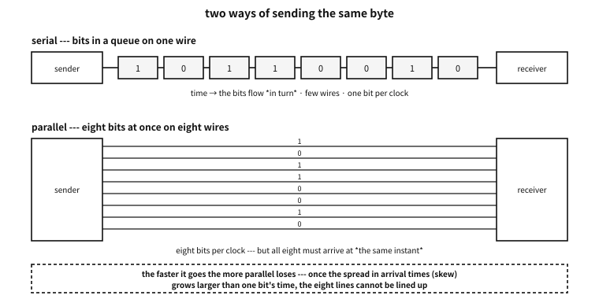
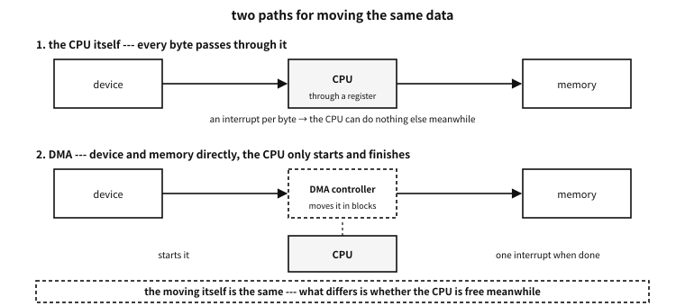

Appendix I — How machines talk: wires, buses and interrupts
In the appendix on C without an operating system, devices were handled by address. Write *(volatile uint8_t *)0x10000000 = 'A' and a character went out. But what happens after that one write? Which wires carry which voltages in what order, and how does the other end turn them back into a character?
This appendix is that story. The aim is not to become a hardware engineer but to be able to read the first page of a datasheet.
★ One question for a first reading: How does a single memory-mapped write in C turn into signals on wires and actions inside a device’s registers? (The protocol tables and timing calculations can wait until you open a datasheet.)
Platform note. what this appendix rests on, and its limits
Words to know first#
| Word | Meaning | Easily confused |
|---|---|---|
| line, signal | one wire carrying a voltage | “data lines” and “control lines” do different work |
| bus | a bundle of lines shared by several devices | point-to-point links (PCIe, USB) are often buses in name only |
| protocol | the agreement about what goes on the wire and when | same wires, different agreement, and nothing is understood |
| frame | one chunk sent at a time | not “one byte” — markers are attached front and back |
| baud | signal changes per second | not necessarily bits per second (it depends on the modulation) |
| throughput | bytes actually moved per second | always below the theoretical figure, because of the frame’s overhead |
| latency | the time from asking to being answered | throughput can be large while latency is large too |
| controller / target | the side that speaks / the side that answers | modern specifications prefer these words to the older “master” |
| full duplex / half duplex | both sides at once / by turns | the number of wires usually decides this |
Table 121.1 — The words used in this appendix
★ The third row from the bottom is the most frequently misunderstood in practice. Throughput and latency are different axes. Fill a truck with hard drives and drive it and the throughput is enormous while the latency is hours. Conversely I2C is slow (100 kbit/s), yet the latency of exchanging one byte is under a millisecond.
Four axes that separate connections#
There are dozens of ways to connect things, and only four questions to ask. Settle these four and the rest is detail.
| Axis | One side | The other | What it settles |
|---|---|---|---|
| number of wires | serial — queued on one wire | parallel — at once on several | pin count and top speed (Figure 121.1) |
| timing | asynchronous — no clock line | synchronous — a separate clock line | whether both sides must agree the speed in advance |
| addressing | none — there is only one other end | present — one of several is called | whether many devices can hang off one wire |
| who starts | only one side (controller-target) | anyone (peer, arbitration) | how collisions are prevented |
Table 121.2 — Four axes that separate connections

Figure 121.1 — Sending the same byte serially and in parallel.
Lay the common schemes out along those four axes and this is the result. The sections that follow unpack the rows one at a time.
| Name | Wires | Clock | Address | In a phrase |
|---|---|---|---|---|
| UART (universal asynchronous receiver-transmitter) / RS-232 | serial, 2 wires (+ flow control) | none (asynchronous) | none | the oldest and the simplest |
| parallel port | parallel, 8 wires + control | yes (a strobe) | none | it was fast, then hit the wall of speed |
| I2C | serial, 2 wires | yes (SCL) | yes (7 bits) | many devices on two wires |
| SPI | serial, 4 wires | yes (SCK) | chosen by a wire (CS) | fast and simple, and it eats wires |
| CAN | serial, 2 wires (differential) | none | carried in the message | anyone speaks and arbitration settles it |
| PCIe | serial lanes ×N (differential) | embedded (carried in the coding) | yes (configuration space) | the motorway inside the machine |
| USB | serial, 2 to 4 wires | embedded | yes (the host assigns it) | the host commands everything |
Table 121.3 — The connections covered in this appendix
A common misconception. serial is slow and parallel is fast
The oldest wire — UART and RS-232#
The simplest way to join two machines is this. Send the bits along one wire in turn. There is no clock line either. Instead both sides agree in advance on “so many bits per second” and each counts on its own clock.
The device that handles this is a UART (universal asynchronous receiver-transmitter).
Frames — cutting characters out of an idle wire#
Without a clock, how is “a character starts now” recognised? By an agreed shape.
| Order | Name | Value | What | Without it |
|---|---|---|---|---|
| — | the idle state | 1 (high) | the wire when nothing is being sent | there is no baseline against which a start can be seen |
| 1 | the start bit | 0 (low) | “it begins now” — the receiver syncs its clock here | character boundaries cannot be found |
| 2–9 | 8 data bits | the value | the low-order bit goes first | — |
| (optional) | parity | computed | one bit making the count of ones even (or odd) | a single-bit error goes unnoticed |
| 10 | the stop bit | 1 (high) | “it ends here” — distinguishable from the next start bit | sending back to back loses the boundary |
Table 121.4 — The ten bits of an 8N1 frame
The notation 8N1 is that table abbreviated.
| Position | Meaning | Common values | Note |
|---|---|---|---|
| first digit | data bits | 8, rarely 7 | 7 bits is a trace of the days of ASCII alone |
| middle letter | parity | N (none), E (even), O (odd) | N is today’s default |
| last digit | stop bits | 1, rarely 2 | 2 gives a slow receiver room to breathe |
Table 121.5 — How to read a notation like 8N1
examples-en/apx-links/uart_frame.c (excerpt)
static size_t make_frame(unsigned char *w, uint8_t byte, unsigned parity_bits)
{
size_t n = 0;
for (unsigned i = 0; i < OS * 2; i++) w[n++] = 1; /* high while idle */
for (unsigned i = 0; i < OS; i++) w[n++] = 0; /* start bit: pull it down */
unsigned ones = 0;
for (int b = 0; b < 8; b++) {
unsigned bit = byte >> b & 1; /* LSB first */
ones += bit;
for (unsigned i = 0; i < OS; i++) w[n++] = (unsigned char)bit;
}
if (parity_bits) { /* for even parity */
unsigned p = ones & 1; /* make the count of ones even */
for (unsigned i = 0; i < OS; i++) w[n++] = (unsigned char)p;
}
for (unsigned i = 0; i < OS; i++) w[n++] = 1; /* stop bit: high again */
for (unsigned i = 0; i < OS * 2; i++) w[n++] = 1;
return n;
}
/* … */
static int receive(const unsigned char *w, size_t n, double rx_bit,
uint8_t *out, int *stop_ok)
{
size_t edge = 0;
while (edge < n && w[edge] != 0) edge++; /* the falling edge */
if (edge >= n) return -1;
double t0 = (double)edge;
uint8_t v = 0;
for (int b = 0; b < 8; b++) {
double at = t0 + rx_bit * (b + 1) + rx_bit / 2.0; /* the middle of bit (b+1) */
size_t idx = (size_t)(at + 0.5);
if (idx >= n) return -1;
v |= (uint8_t)(w[idx] << b);
}
double sat = t0 + rx_bit * 9 + rx_bit / 2.0; /* where the stop bit is */
*stop_ok = (sat < n) && w[(size_t)(sat + 0.5)] == 1;
*out = v;
return 0;
}Output
== the byte to send ==
'K' = 0x4B = binary 01001011 (most significant first)
== the shape on the wire (8N1) --- low=_ high=- ==
----__----__--____--__------
Std0d1d2d3d4d5d6d7Sp
* data goes least significant bit first, so it looks reversed to the eye.
== timing ==
baud one bit one frame (10 bits) bytes per second
300 3333.333 33333.3 30
9600 104.167 1041.7 960
19200 52.083 520.8 1920
115200 8.681 86.8 11520
921600 1.085 10.9 92160
(microseconds. 8N1 spends 10 bits on one byte, so 20% is overhead)
== when the receiver's baud rate is off ==
the receiver samples the middle using its own bit length; the error shifts it.
rx baud error value read stop bit result
9600 +0.0% 0x4B ok 'K' --- correct
9700 +1.0% 0x4B ok 'K' --- correct
9900 +3.1% 0x4B ok 'K' --- correct
10100 +5.2% 0x4B ok 'K' --- correct
10600 +10.4% 0x8B broken character corrupted
19200 +100.0% 0x9E ok character corrupted
range of error where the character survives here: -5.2% to +5.9%
* the arithmetic agrees. The stop bit is sampled at 9.5 bit times,
and that instant must fall within that bit (one bit wide), so
0.5 / 9.5 = 5.3% is the margin on one side.
* yet practice uses 2 to 3% as the rule. This 5.3% is shared by both ends
(the sender drifts too), oscillators move with temperature and supply,
and a real receiver samples three points and takes a majority.
The theoretical limit and the design budget are different numbers.
== what parity catches ==
'K' has 4 ones -> even parity bit = 0
one flipped bit changes the parity, so it is caught.
two flipped bits leave the parity unchanged, so it is not --- parity
is a device for noticing an error, not for correcting one.
The demonstration shows four things.
First, data goes low-order bit first. Which is why reading the shape on the wire makes the binary number look reversed.
Second, 8N1 spends ten bits on one byte. So 9600 baud is 960 bytes per second — 20% of it is overhead holding the frame together.
Third, a baud mismatch accumulates. The clock is synced at the start bit, but by the tenth bit the error has grown nine and a half times. The demonstration searched for the threshold itself and answered about ±5%, and the arithmetic agrees: 0.5 / 9.5 = 5.3%.
Fourth, and yet the rule in practice for baud error is “2 to 3%”. That these two numbers differ matters — the theoretical limit is shared between the two ends, oscillators drift with temperature and supply, and a real receiver samples several points and takes a majority. In the words of chapter 55, a contract is not the limit but a budget with margin left.
Q. Why such awkward numbers as 9600, 19200, 115200?
A. The crystal old UART chips used was 1.8432 MHz, and dividing it by integers gives these numbers (1.8432 MHz ÷ 16 ÷ 12 = 9600). What became standard was not “a round decimal” but a number an integer divider can make. Which is why some clocks cannot produce exactly 115200, and the error that follows eats into the budget above.
RS-232 — the same frame, different voltages#
A UART is logic; RS-232 is the electrical specification for putting that logic on a wire. Mixing the two burns hardware often enough to deserve a table.
| TTL/CMOS UART | RS-232 | |
|---|---|---|
| 1 (mark) | 3.3 V or 5 V | −3 V to −15 V |
| 0 (space) | 0 V | +3 V to +15 V |
| logic | high is 1 | inverted — negative is 1 |
| reach | centimetres on a board | a dozen metres or so |
| wired together directly | — | the voltages differ and the chip is damaged — a converter must sit between |
Table 121.6 — TTL-level UART and RS-232
★ The last row is where hardware gets destroyed in practice. A computer’s serial port must not go straight onto a microcontroller’s UART pin — something like a MAX232 has to be in between.
| Name | Direction | What | Today |
|---|---|---|---|
| TxD | out | data being sent | always used |
| RxD | in | data being received | always used |
| GND | — | the reference voltage — without it nothing works | always used |
| RTS / CTS | out / in | “may I send” — hardware flow control | used on fast links |
| DTR / DSR | out / in | “I am powered” — device readiness | a trace of the modem era |
| DCD | in | the modem has a connection | almost never used |
| RI | in | the phone is ringing | almost never used |
Table 121.7 — The signals of RS-232 (on a 9-pin connector)
Flow control — how to say “wait”#
If the receiving side cannot keep up, data simply disappears. A UART has no retransmission.
| Kind | How | Good | Bad |
|---|---|---|---|
| hardware (RTS/CTS) | a separate line is lowered to say “stop” | it does not touch the data, and stops at once | two more wires are needed |
| software (XON/XOFF) | 0x13 and 0x11 are inserted into the data stream | three wires suffice | binary data cannot be sent — those bytes are misread |
Table 121.8 — Two kinds of flow control
Counter-example. sending binary data over an XON/XOFF line
0x13 byte in the middle of the data is read by the other end as “stop”. The transfer freezes then and there, and may never resume. On a line that will carry binary data, use hardware flow control or encode the data as text.The four errors a UART reports#
| Name | When | What it usually means |
|---|---|---|
| framing error | the stop bit position was low | the baud rates differ, or the line was disturbed |
| parity error | the count of ones does not match the agreement | noise — one bit flipped |
| overrun | the next byte arrived before the last was read | my code was late — an interrupt or DMA is needed |
| break | the line stayed low for longer than a frame | a deliberate signal from the other end, or a wire broken to ground |
Table 121.9 — Errors met in a UART’s status register
★ The third row joins on to the end of this appendix. An overrun is a software problem, not a hardware one — when taking an interrupt per byte becomes too much, DMA (direct memory access) is what is needed.
The driver — the eight registers of the 16550#
The 16550, the UART chip that sat behind the PC’s COM1, is still used with the same register layout, and QEMU’s RISC-V machine model virt imitates it. The driver below is a cut-down version of what Linux’s 8250 driver and firmware’s early consoles do. It loads the divisor for a baud rate and sets the frame to 8N1, waits for the transmit slot to empty before putting in a byte, and uses the chip’s loopback (a test mode that connects transmit straight to receive) to see whether the chip answers.
The drivers of this appendix and the “disk” appendix touch hardware only through four functions (hw_read8, hw_read32, hw_write8, hw_write32). There is one copy of the driver code; only the bodies of those four come in two versions. Built on this machine (x86-64 Linux), they print each command they receive — W address <- value is a write and R address -> value a read. A read needs an answer, so each example has a small reply table, and that table is all the device imitation there is. Built with the cross compiler, they really read and write those addresses, and the program runs on a QEMU machine model. Lines starting with # are not commands; they are the example reporting its own result.
examples-en/apx-links/uart16550/uart16550.c (excerpt)
/* Eight registers of one byte each.
The same number is a different register for reads and writes. */
enum {
/* received byte / byte to send / (DLAB=1) divisor low */
RBR = 0, THR = 0, DLL = 0,
IER = 1, DLM = 1, /* interrupt enable / (DLAB=1) divisor high */
FCR = 2, /* FIFO control (write only) */
LCR = 3, /* line control: data bits, parity, stop bits, DLAB */
MCR = 4, /* modem control: DTR, RTS, loopback */
LSR = 5, /* line status: received, room to send, errors */
};
enum { LCR_8N1 = 0x03, LCR_DLAB = 0x80 };
enum { MCR_DTR = 0x01, MCR_RTS = 0x02, MCR_LOOP = 0x10 };
enum { LSR_DR = 0x01, LSR_OE = 0x02, LSR_PE = 0x04, LSR_FE = 0x08, LSR_BI = 0x10,
LSR_THRE = 0x20 };
/* … */
int uart_init(const struct uart *u, uint32_t baud)
{
/* The chip samples each bit 16 times, so divisor = clock / (16 x baud). */
uint32_t div = u->clock / (16u * baud);
if (div == 0 || div > 0xFFFF) return -1;
if (u->clock % (16u * baud) * 50 > 16u * baud) return -1; /* more than 2% off */
wr(u, IER, 0x00); /* interrupts off; we poll */
wr(u, LCR, LCR_DLAB); /* turn slots 0 and 1 into the divisor */
wr(u, DLL, (uint8_t)div);
wr(u, DLM, (uint8_t)(div >> 8));
wr(u, LCR, LCR_8N1); /* drop DLAB and set 8N1 */
wr(u, FCR, 0x07); /* enable the FIFOs and clear both */
wr(u, MCR, MCR_DTR | MCR_RTS); /* tell the other end "I am here" */
return 0;
}
/* … */
void uart_putc(const struct uart *u, char c)
{
while (!(rd(u, LSR) & LSR_THRE)) { } /* wait until the transmit slot is empty */
wr(u, THR, (uint8_t)c);
}
int uart_getc(const struct uart *u)
{
if (!(rd(u, LSR) & LSR_DR)) return -1;
return rd(u, RBR);
}
unsigned uart_errors(const struct uart *u)
{
/* The error bits clear the moment LSR is read. Read once and keep the value. */
return rd(u, LSR) & (LSR_OE | LSR_PE | LSR_FE | LSR_BI);
}
/* … */
/* Connect transmit to receive inside the chip and send one byte round. Before any
cable, this tells whether the chip is there and its registers obey. */
int uart_loopback_test(const struct uart *u)
{
uint8_t mcr = rd(u, MCR);
wr(u, MCR, mcr | MCR_LOOP);
for (int i = 0; i < 16 && uart_getc(u) >= 0; i++) { } /* drain the FIFO */
uart_putc(u, 'K');
int got = -1;
for (int tries = 0; tries < 1000 && got < 0; tries++)
got = uart_getc(u);
wr(u, MCR, mcr);
return got == 'K' ? 0 : -1;
}Output
== this machine: the commands the driver sends (trace backend) ==
W 0x10000001 <- 0x00
W 0x10000003 <- 0x80
W 0x10000000 <- 0x02
W 0x10000001 <- 0x00
W 0x10000003 <- 0x03
W 0x10000002 <- 0x07
W 0x10000004 <- 0x03
R 0x10000004 -> 0x03
W 0x10000004 <- 0x13
R 0x10000005 -> 0x60
R 0x10000005 -> 0x60
W 0x10000000 <- 0x4b 'K'
R 0x10000005 -> 0x61
R 0x10000000 -> 0x4b 'K'
W 0x10000004 <- 0x03
R 0x10000005 -> 0x60
W 0x10000000 <- 0x6f 'o'
R 0x10000005 -> 0x60
W 0x10000000 <- 0x6b 'k'
R 0x10000005 -> 0x60
W 0x10000000 <- 0x0a
W 0x00100000 <- 0x00005555
== QEMU virt (emulated RISC-V): the same driver on the 16550 model ==
(no RISC-V toolchain here: this half was not built or run)
The first five writes in the output answer the earlier question “why such awkward numbers as 9600, 19200, 115200?”. The clock QEMU gives this chip in its device tree is 3,686,400 Hz (twice 1.8432 MHz), and the divisor for 115200 baud, 3686400 / (16 × 115200) = 2, divides exactly. The driver raises the DLAB bit in LCR to turn slots 0 and 1 into the divisor, writes 2, and drops DLAB again. An address that is a different register depending on a bit is a saving from the days when address lines were scarce.
The four error bits of the line status register (LSR) are the four rows of the table “errors met in a UART’s status register” above. Reading LSR clears them, so a driver has to keep the value it read once.
The ok on the QEMU side is the chip model returning 'K' through loopback. Built without the loopback bit, the 'K' went out to the console and no was printed. The QEMU 16550 does not imitate baud rates, though: with a wrong divisor the characters still come out. What happens when the baud rates disagree is what the frame demonstration above shows; this one shows what is written to which register, in what order.
Why parallel disappeared#
Sending eight bits at once looks eight times faster. For a while it was. The Centronics port that connected printers worked that way.
| Group | Lines | What | Direction |
|---|---|---|---|
| data | D0 to D7 | eight bits at once | out |
| control | STROBE | “the data is valid now” — effectively the clock | out |
| status | ACK | “received” | in |
| status | BUSY | “still working, wait” | in |
| status | PAPER OUT, SELECT, ERROR | the printer’s circumstances | in |
| reference | GND ×8 | a ground paired with each data line to reduce noise | — |
Table 121.10 — The signals of a parallel (Centronics) port
Why it vanished despite being fast is in Figure 121.1. The requirement that all eight lines arrive at the same instant becomes the wall.
| Problem | What it is | As speed rises |
|---|---|---|
| skew | lines differ in length and load, so arrival times spread | once one bit’s time is shorter than the spread, they cannot be lined up |
| crosstalk | a change on one line leaks into its neighbour | the faster the change, the worse it is |
| pins and cost | eight lines means eight of everything: connector, board, shielding | expensive, thick and unbendable |
| termination | each line’s impedance must be matched or it reflects | beyond a few hundred MHz it is effectively impossible |
Table 121.11 — Why parallel loses as things get faster
★ So today’s answer is not “parallel was abandoned” but “make one serial line very fast, and bundle several of them”. PCIe’s lanes, USB 3’s several pairs and SATA all have that shape. Lining the lines up is solved by hardware recovering each line separately and then reassembling — possible because each line carries its own clock inside its coding.
Many devices on two wires — I2C#
The scheme for when wires must be saved above all. Two wires (data SDA, clock SCL) carry several devices, chosen by address.
| Name | What | How it is made | Why so |
|---|---|---|---|
| SCL | the clock | the controller drives it | synchronous — no need to agree a speed in advance |
| SDA | data | the two sides use it by turns | half duplex — one direction at a time |
| START | “a transaction begins” | SDA is pulled low while SCL is high | a deliberate violation of “data changes only while SCL is low”, which is what makes it a marker |
| STOP | “it ends” | SDA is released high while SCL is high | likewise |
| repeated START | “do not end, only turn round” | another START without a STOP | no other controller can cut in meanwhile |
| ACK / NACK | “received” / “absent, or enough” | on the ninth clock the receiver pulls SDA low, or does not | possible precisely because a line can only be pulled down |
Table 121.12 — The signals and markers of I2C
examples-en/apx-links/i2c_frame.c (excerpt)
static void put_byte(uint8_t b, const char *what, int acked)
{
for (int i = 7; i >= 0; i--) put(EV_BIT, b >> i & 1, i == 7 ? what : NULL);
put(acked ? EV_ACK : EV_NACK, acked ? 0 : 1, NULL);
}
/* … */
put(EV_START, 0, "the controller takes the bus");
put_byte((uint8_t)(dev << 1 | 0), "device address + write", 1);
put_byte(reg, "register number", 1);
put_byte(val, "value to write", 1);
put(EV_STOP, 0, "release the bus");
/* ── a read: a repeated START only changes direction ── */
put(EV_START, 0, "take it again");
put_byte((uint8_t)(dev << 1 | 0), "device address + write", 1);
put_byte(reg, "say which register to read first", 1);
put(EV_RSTART, 0, "* START again without STOP --- nobody can cut in meanwhile");
put_byte((uint8_t)(dev << 1 | 1), "device address + read", 1);
put_byte(val, "the value the device returned", 0); /* on the last byte the controller signals the end with a NACK */
put(EV_STOP, 0, "end");Output
== why the address is confusing ==
the 7-bit address 0x3C is shifted one place on the wire (last bit is read/write).
write: 0x3C << 1 | 0 = 0x78
read : 0x3C << 1 | 1 = 0x79
so datasheets call the same device 0x3C in one place and 0x78 in another.
== the order on the wire ==
START the controller takes the bus
byte 0x78 device address + write
ACK the device pulled SDA down = received
byte 0x00 register number
ACK the device pulled SDA down = received
byte 0xAF value to write
ACK the device pulled SDA down = received
STOP release the bus
START take it again
byte 0x78 device address + write
ACK the device pulled SDA down = received
byte 0x00 say which register to read first
ACK the device pulled SDA down = received
repeated START * START again without STOP --- nobody can cut in meanwhile
byte 0x79 device address + read
ACK the device pulled SDA down = received
byte 0xAF the value the device returned
NACK nobody pulled it down = absent, or done
STOP end
== what means what ==
START : SDA falls while SCL is high (deliberately breaking the rule that
STOP : SDA rises while SCL is high data changes only while SCL is low)
ACK : on the ninth clock the receiver pulls SDA down
NACK : nobody pulls it down and the line stays high --- absent and enough look alike
== timing ==
clocks in these two transactions: 63 (data and ACK bits), 5 markers
speed mode clock time for these two transactions
standard 100.0 630.0 microseconds
fast 400.0 157.5 microseconds
fast plus 1000.0 63.0 microseconds
high speed 3400.0 18.5 microseconds
(clock in kHz; markers and wait states are not counted)
== why the lines are only ever pulled down ==
if two devices speak at once, one pushing 5V and one pushing 0V, current
flows straight through and damages the chips. I2C lets nobody push (open drain)
and leaves the raising to a resistor. So speaking at once is safe,
and the property that zero wins gives arbitration and ACK for free.
Three things are immediately useful in practice.
First, why an address is written two ways. A 7-bit address is shifted one place left on the wire with the read/write bit appended. So the same device appears in datasheets as 0x3C and as 0x78. Both are right — one is the address, the other is “the first byte on the wire”.
Second, NACK means two things. “No such device” and “stop sending now” look the same on the wire. The convention is that the controller NACKs the last byte of a read to say it is done.
Third, a design where lines are only ever pulled down makes much of this free. Nobody pushes a voltage up, so two speaking at once damages no chip, and from the property “zero wins” both ACK and arbitration simply fall out. In exchange the pull-up is done by a resistor, so rising is slow, and that sets I2C’s speed ceiling.
| Name | Clock | Bytes per second (roughly) | Note |
|---|---|---|---|
| standard | 100 kHz | about 11,000 | most sensors |
| fast | 400 kHz | about 44,000 | today’s default |
| fast plus | 1 MHz | about 110,000 | the wiring must be short |
| high speed | 3.4 MHz | about 380,000 | needs dedicated circuitry — uncommon |
Table 121.13 — I2C speed modes
Q. I attached several I2C devices and none is found. What do I look at first?
A. Four things in order. ① Are the pull-up resistors there (without them the line never rises)? ② Do the addresses collide (two sensors of the same kind usually do — change one with its address pin)? ③ Is the ground shared? ④ Is the wiring so long, or the device count so high, that the rise time is too slow? Three of the four are electrical problems and only one is software.
The driver — telling a controller one signal at a time#
Software seldom wiggles SDA and SCL itself (bit-banging). Usually an I2C controller drives the wires, and the driver gives the controller commands such as “make a start and send this byte”. Below is a driver for the OpenCores I2C controller, found in chips such as the SiFive FU540, reading the temperature from an LM75 sensor (address 0x48). The controller’s command bits STA, WR, RD, NACK and STO match the signals in the table above (START, a byte, ACK/NACK, STOP) one for one.
examples-en/apx-links/i2c_ocores/i2c.c (excerpt)
/* Issue one command and wait for it to finish.
One byte plus one ACK bit go over the wire. */
static int step(const struct i2c *b, uint8_t cmd)
{
wr(b, CR, cmd);
uint8_t sr;
while ((sr = rd(b, SR)) & SR_TIP) { }
if (sr & SR_AL) return -1; /* lost the bus to another master */
return (cmd & CR_WR) && (sr & SR_RXNACK) ? -1 : 0; /* nobody ACKed */
}
/* … */
int i2c_write_read(const struct i2c *b, uint8_t addr, const uint8_t *w, unsigned nw,
uint8_t *r, unsigned nr)
{
wr(b, TXR, (uint8_t)(addr << 1)); /* address + write (0) */
if (step(b, CR_STA | CR_WR)) goto fail;
for (unsigned i = 0; i < nw; i++) {
wr(b, TXR, w[i]);
if (step(b, CR_WR)) goto fail;
}
if (nr) {
wr(b, TXR, (uint8_t)(addr << 1 | 1)); /* repeated start, address + read (1) */
if (step(b, CR_STA | CR_WR)) goto fail;
for (unsigned i = 0; i < nr; i++) {
/* the last byte is answered with NACK ("enough"), and a stop follows */
int last = i + 1 == nr;
step(b, (uint8_t)(CR_RD | (last ? CR_NACK | CR_STO : 0)));
r[i] = rd(b, RXR);
}
return 0;
}
return step(b, CR_STO);
fail:
wr(b, CR, CR_STO); /* release the bus */
return -1;
}Output
== this machine: the commands the driver sends (trace backend) ==
W 0x10030008 <- 0x00
W 0x10030000 <- 0xe7
W 0x10030004 <- 0x03
W 0x10030008 <- 0x80
W 0x1003000c <- 0x90
W 0x10030010 <- 0x90
R 0x10030010 -> 0x00
W 0x1003000c <- 0x00
W 0x10030010 <- 0x10
R 0x10030010 -> 0x00
W 0x1003000c <- 0x91
W 0x10030010 <- 0x90
R 0x10030010 -> 0x00
W 0x10030010 <- 0x20
R 0x10030010 -> 0x00
R 0x1003000c -> 0x19
W 0x10030010 <- 0x68
R 0x10030010 -> 0x00
R 0x1003000c -> 0x80
# LM75 at 0x48: 25.5 C
(QEMU's RISC-V machines model no I2C controller: there is no second half here)
The bytes 0x90 and 0x91 sent in the output are the earlier “why an address is written two ways” — the 7-bit address 0x48 shifted one place, with the write (0) or read (1) bit added at the end. The command 0x68 that receives the second byte sets RD, NACK and STO together, saying “enough” and stopping at once. The command 0x20 for the first byte has no NACK, so an ACK goes out.
This demonstration has no QEMU half. QEMU’s RISC-V machine models have no I2C controller, so the answers in the output above are made up by the reply table (the status register always says “done, ACK received”, and the temperature bytes give 25.5 degrees). This driver has not been run on a real controller.
Fast on four wires — SPI#
Where I2C gave up speed to save wires, SPI does the reverse: four wires, and fast.
| Name | Other names | What | Direction |
|---|---|---|---|
| SCK | SCLK, CLK | the clock — the controller drives it | controller → device |
| MOSI | SDO, COPI | data the controller sends | controller → device |
| MISO | SDI, CIPO | data the device sends | device → controller |
| CS | SS, NSS, CE | the marker meaning I am speaking to this device (usually active low) | controller → device |
Table 121.14 — The four wires of SPI
★ There is no address. Instead one CS line is run to each device. More devices means more wires — exactly the opposite trade from I2C.
examples-en/apx-links/spi_shift.c (excerpt)
for (int c = 1; c <= 8; c++) {
unsigned mosi = m >> 7 & 1; /* the bit the controller puts out (high bit first) */
unsigned miso = s >> 7 & 1; /* the bit the device puts out */
m = (uint8_t)(m << 1 | miso); /* each takes the other's bit in at the low end */
s = (uint8_t)(s << 1 | mosi);
bits8(m, mb); bits8(s, sb);
printf(" %-6d %-6u %-6u %-12s %-12s\n", c, mosi, miso, mb, sb);
}Output
== at the start ==
controller register : 0xA5 (10100101)
device register : 0x3C (00111100)
== one bit per clock ==
clock MOSI MISO controller device
1 1 0 01001010 01111001
2 0 0 10010100 11110010
3 1 1 00101001 11100101
4 0 1 01010011 11001010
5 0 1 10100111 10010100
6 1 1 01001111 00101001
7 0 0 10011110 01010010
8 1 0 00111100 10100101
== after eight clocks ==
controller register : 0x3C <- what the device sent
device register : 0xA5 <- what the controller sent
* sending and receiving finished in the same eight clocks. Full duplex is
free because the two registers form one ring. Even with nothing to receive
something must be sent (usually 0x00 or 0xFF): a dummy byte.
== the four modes --- which edge presents, which samples ==
mode CPOL CPHA SCK at rest sampling edge
0 0 0 low rising (first edge)
1 0 1 low falling (second edge)
2 1 0 high falling (first edge)
3 1 1 high rising (second edge)
== when the mode is mismatched ==
sent 0xA5 (10100101)
read with one edge of error: 0x52 (01010010) <- everything shifted one place
* so when SPI gives half-right values, suspect the mode first.
== speed ==
SPI has no start, stop, address or ACK. Exactly eight clocks per byte.
SCK bytes per second compared
1 MHz 125000 11 times I2C standard (100 kHz)
10 MHz 1250000 112 times I2C standard (100 kHz)
50 MHz 6250000 562 times I2C standard (100 kHz)
(UART spends 10 bits per byte, I2C 9, SPI 8 --- no overhead)
The demonstration shows what SPI really is. Two shift registers form a single ring. Push one bit per clock and after eight clocks the two values have swapped places. So “sending and receiving at the same time” is free — and even to receive only, you must send something (a dummy byte).
| Mode | CPOL | CPHA | Clock at rest | Sampling edge |
|---|---|---|---|---|
| 0 | 0 | 0 | low | rising (the first edge) |
| 1 | 0 | 1 | low | falling (the second edge) |
| 2 | 1 | 0 | high | falling (the first edge) |
| 3 | 1 | 1 | high | rising (the second edge) |
Table 121.15 — SPI’s four modes
A common misconception. SPI has a specification, so any device can just be wired up
The driver — asking a flash chip its name#
The device most often hung on SPI is a NOR flash, and many boards read their first-stage bootloader from it. The driver below uses the SPI controller of QEMU’s machine model sifive_u (a model of the SiFive FU540 board) to ask the flash for its identity (the JEDEC ID: three bytes for manufacturer, type and capacity) and read its first eight bytes.
examples-en/apx-links/spi_flash/spi.c (excerpt)
/* SPI receives as much as it sends. Push one byte in and one byte comes out. */
void spi_xfer(const struct spi *s, const uint8_t *tx, uint8_t *rx, unsigned n)
{
wr(s, CSMODE, CSMODE_HOLD); /* hold chip select between bytes too */
for (unsigned i = 0; i < n; i++) {
while (rd(s, TXDATA) & FIFO_FLAG) { }
wr(s, TXDATA, tx ? tx[i] : 0x00);
uint32_t v;
while ((v = rd(s, RXDATA)) & FIFO_FLAG) { }
if (rx) rx[i] = (uint8_t)v;
}
}
void spi_release(const struct spi *s) { wr(s, CSMODE, CSMODE_AUTO); }
/* … */
/* A SPI NOR flash command is its first byte.
One command lasts while chip select is down. */
void flash_jedec_id(const struct spi *s, uint8_t id[3])
{
uint8_t cmd = 0x9F; /* READ ID: manufacturer, type, capacity */
spi_xfer(s, &cmd, 0, 1);
spi_xfer(s, 0, id, 3);
spi_release(s);
}
void flash_read(const struct spi *s, uint32_t addr, uint8_t *dst, unsigned n)
{
uint8_t cmd[4] = { 0x03, (uint8_t)(addr >> 16), (uint8_t)(addr >> 8),
(uint8_t)addr };
spi_xfer(s, cmd, 0, 4); /* READ: one command byte + 3-byte address */
spi_xfer(s, 0, dst, n); /* then shift out n bytes */
spi_release(s);
}Output
== this machine: the commands the driver sends (trace backend) ==
W 0x10040060 <- 0x00000000
W 0x10040000 <- 0x00000003
W 0x10040004 <- 0x00000000
W 0x10040010 <- 0x00000000
W 0x10040040 <- 0x00080000
W 0x10040018 <- 0x00000002
R 0x10040048 -> 0x00000000
W 0x10040048 <- 0x0000009f
R 0x1004004c -> 0x00000000
W 0x10040018 <- 0x00000002
R 0x10040048 -> 0x00000000
W 0x10040048 <- 0x00000000
R 0x1004004c -> 0x0000009d
R 0x10040048 -> 0x00000000
W 0x10040048 <- 0x00000000
R 0x1004004c -> 0x00000070
R 0x10040048 -> 0x00000000
W 0x10040048 <- 0x00000000
R 0x1004004c -> 0x00000019
W 0x10040018 <- 0x00000000
W 0x10040018 <- 0x00000002
R 0x10040048 -> 0x00000000
W 0x10040048 <- 0x00000003
R 0x1004004c -> 0x00000000
R 0x10040048 -> 0x00000000
W 0x10040048 <- 0x00000000
R 0x1004004c -> 0x00000000
R 0x10040048 -> 0x00000000
W 0x10040048 <- 0x00000000
R 0x1004004c -> 0x00000000
R 0x10040048 -> 0x00000000
W 0x10040048 <- 0x00000000
R 0x1004004c -> 0x00000000
W 0x10040018 <- 0x00000002
R 0x10040048 -> 0x00000000
W 0x10040048 <- 0x00000000
R 0x1004004c -> 0x00000042
R 0x10040048 -> 0x00000000
W 0x10040048 <- 0x00000000
R 0x1004004c -> 0x0000004f
R 0x10040048 -> 0x00000000
W 0x10040048 <- 0x00000000
R 0x1004004c -> 0x0000004f
R 0x10040048 -> 0x00000000
W 0x10040048 <- 0x00000000
R 0x1004004c -> 0x00000054
R 0x10040048 -> 0x00000000
W 0x10040048 <- 0x00000000
R 0x1004004c -> 0x00000020
R 0x10040048 -> 0x00000000
W 0x10040048 <- 0x00000000
R 0x1004004c -> 0x0000004f
R 0x10040048 -> 0x00000000
W 0x10040048 <- 0x00000000
R 0x1004004c -> 0x0000004b
R 0x10040048 -> 0x00000000
W 0x10040048 <- 0x00000000
R 0x1004004c -> 0x0000000a
W 0x10040018 <- 0x00000000
# JEDEC id 9d 70 19 (manufacturer 0x9d = ISSI)
# first 8 bytes of the flash: BOOT OK
== QEMU sifive_u (emulated RISC-V): the same driver on the SPI controller and flash models ==
(no RISC-V toolchain here: this half was not built or run)
Where W 0x10040048 <- 0x00000000 repeats in the output are the dummy bytes mentioned above: to make the flash give up its three identity bytes, the master has to push three bytes in. The other way round, the byte pushed out while the command byte 0x9f goes in is thrown away. Chip select has to stay down for the whole command, so the driver sets CSMODE to HOLD (2) and returns it to AUTO (0) when the command ends. The first byte on the QEMU side, 9d, is ISSI’s manufacturer number and matches the flash on this machine model (IS25WP256). The line after it is the first eight bytes of the file handed to QEMU as the flash contents.
| I2C | SPI | So | |
|---|---|---|---|
| wires | 2 (unchanged as devices are added) | 3 + 1 per device | many devices favour I2C |
| speed | 100 kHz to 1 MHz | tens of MHz | needing speed favours SPI |
| bits per byte | 9 (the ACK included) | 8 | SPI has no overhead either |
| direction | half duplex | full duplex | needing both at once favours SPI |
| confirmation of receipt | there is an ACK | none | SPI cannot tell that the other end has died |
| specification | written down | convention | with SPI the datasheet must be read |
Table 121.16 — I2C against SPI
On one wire, and with anyone speaking — 1-Wire and CAN#
| Name | Wires | The idea | Where |
|---|---|---|---|
| 1-Wire | 1 (+ ground) | zero and one are told apart by pulse length, and power is stolen from the data line | temperature sensors, identity chips |
| CAN | 2 (differential) | anyone speaks, and on a collision the lower message number wins (arbitration) | cars, industrial machinery |
Table 121.17 — Two unusual connection schemes
★ CAN’s arbitration is the same idea as I2C’s “zero wins”. When two speak at once the signal of the one sending zero remains on the wire, and the one sending a one sees that the wire differs from what it sent and withdraws. It is not collision detection followed by retransmission: the collision itself is the priority decision — which is why an urgent message is never delayed.
The motorway inside the machine — PCI and PCI Express#
So far these were “wires between chips”. Now the scale changes. Where graphics cards, network cards and NVMe storage attach — the PCI family.
The name says “bus”, but today’s PCIe is really point to point. Old PCI really did have several devices sharing the same lines (so one slow device slowed everything), while PCIe gives each device its own lines with a switch joining them in the middle.
| old PCI | PCIe | So | |
|---|---|---|---|
| connection | several devices share one bus | point to point per device, plus switches | one device cannot hold up the others |
| wires | parallel 32/64 bits + clock | serial differential lanes ×1 to ×16 | exactly the conclusion of Figure 121.1 |
| going faster | raise the clock (33 → 66 MHz) | add lanes or raise the generation | the direction of growth differs |
| interrupts | shared INTA to INTD lines | MSI/MSI-X — sent as a memory write | it becomes data rather than a wire |
Table 121.18 — PCI and PCI Express
| Generation | On the wire | Coding | Effective bandwidth |
|---|---|---|---|
| 1.0 | 2.5 GT/s | 8b/10b (20% lost) | about 250 MB/s |
| 2.0 | 5 GT/s | 8b/10b | about 500 MB/s |
| 3.0 | 8 GT/s | 128b/130b (1.5% lost) | about 985 MB/s |
| 4.0 | 16 GT/s | 128b/130b | about 1.97 GB/s |
| 5.0 | 32 GT/s | 128b/130b | about 3.94 GB/s |
Table 121.19 — PCIe generations and effective speed (per lane)
★ The “coding” column matters for a reason. There is no separate clock line, so the clock must be planted in the data (otherwise a long run of zeros loses the receiver’s timing), and what is planted is the loss. Dropping 8b/10b for 128b/130b at 3.0 is why “1.6 times the speed” became “twice the bandwidth”.
Configuration space — the 256 bytes in which a device introduces itself#
PCI’s best idea is this. Every device carries a business card of the same shape. So the operating system can read that card — the configuration space — and find out what is plugged in without knowing in advance.
| Offset | Size | Name | What | Typical value |
|---|---|---|---|---|
0x00 | 2 | vendor ID | a number handed out by PCI-SIG | 0x8086 (Intel) |
0x02 | 2 | device ID | a model number chosen by the vendor | — |
0x04 | 2 | command | the switch that turns this device on — I/O, memory, bus master | 0x0007 |
0x06 | 2 | status | errors, and a flag saying “there is a capability list” | 0x0010 |
0x08 | 1 | revision | the revision of the same model | — |
0x09–0x0B | 3 | class code | what kind of device this is — known without a driver | 02 00 00 = Ethernet |
0x0C | 1 | cache line size | a trace of old PCI | 0x10 |
0x0E | 1 | header type | 0 device, 1 bridge, 0x80 means multiple functions | 0x00 |
0x10–0x24 | 24 | BAR (base address register) 0 to 5 | the address windows this device requests (Table 121.21) | — |
0x2C–0x2E | 4 | subsystem ID | the company and model that built the board | — |
0x30 | 4 | expansion ROM | where firmware on the card lives | — |
0x34 | 1 | capability pointer | the offset of the first item of a linked list | 0x50 |
0x3C | 1 | interrupt line | which IRQ it was wired to in the old scheme | 11 |
0x3D | 1 | interrupt pin | which of INTA to INTD | 1 (A) |
Table 121.20 — The main fields of PCI configuration space (header type 0)
| Bits | Value | Meaning | Note |
|---|---|---|---|
| 0 | 0 | memory space | usually this — a pointer reaches it |
| 0 | 1 | I/O space | x86’s narrow 64 KiB world |
| 2–1 | 00 | 32-bit address | |
| 2–1 | 10 | 64-bit address | the next BAR holds the upper 32 bits — it eats two slots |
| 3 | 1 | prefetchable | reading has no side effect, so caching and burst transfers are allowed |
| rest | address | the base address | the low bits are hardwired to zero for the size |
Table 121.21 — The low bits of a BAR say what kind it is
The driver below is a cut-down version of the enumeration (finding every device plugged in and handing out addresses) that firmware does at boot. It scans the PCIe of QEMU’s virt machine model through ECAM (configuration space laid out as a window in the memory addresses), sizes each device’s BARs and gives them addresses, and follows the capability list. Two more devices are plugged into QEMU — its teaching device edu and a virtio random number generator.
examples-en/apx-links/pci_enum/pci.c (excerpt)
/* ECAM: put the bus, device, function and register numbers in their bit positions and
that is the address. 4 KiB per function, eight functions per device, thirty-two
devices per bus. */
static uintptr_t cfg_addr(const struct pci_host *h, unsigned bus, unsigned dev,
unsigned fn, unsigned off)
{
return h->ecam + ((uintptr_t)bus << 20 | (uintptr_t)dev << 15
| (uintptr_t)fn << 12 | off);
}
/* … */
/* A BAR's size cannot be asked for. Write all ones and read back the low bits the
device holds at zero. A 64-bit BAR's next slot holds the upper 32 bits. */
static unsigned size_bar(struct pci_host *h, struct pci_fn *f, unsigned i)
{
unsigned off = BAR0 + 4 * i;
uint32_t orig = pci_read32(h, f->bus, f->dev, f->fn, off);
if (orig & 1) return 1; /* skip I/O-space BARs */
int is64 = (orig >> 1 & 3) == 2;
pci_write32(h, f->bus, f->dev, f->fn, off, 0xFFFFFFFFu);
uint64_t mask = pci_read32(h, f->bus, f->dev, f->fn, off) & ~0xFull;
if (is64) {
pci_write32(h, f->bus, f->dev, f->fn, off + 4, 0xFFFFFFFFu);
mask |= (uint64_t)pci_read32(h, f->bus, f->dev, f->fn, off + 4) << 32;
} else {
mask |= 0xFFFFFFFF00000000ull;
}
if ((uint32_t)mask == 0) { /* no bits held: there is no BAR */
pci_write32(h, f->bus, f->dev, f->fn, off, orig);
return is64 ? 2 : 1;
}
uint64_t size = ~mask + 1; /* the lowest one among the held bits */
/* Fourth step: write an address back into the BAR. Being firmware, this code writes
a new address cut from the window, aligned to the size (an operating system would
restore the firmware's value). That address becomes the address of the device's
registers. */
uint64_t at = (h->mem_next + size - 1) & ~(size - 1);
if (at + size > h->mem_end) at = 0; /* if the window runs out, assign nothing */
else h->mem_next = at + size;
pci_write32(h, f->bus, f->dev, f->fn, off, (uint32_t)at);
if (is64) pci_write32(h, f->bus, f->dev, f->fn, off + 4, (uint32_t)(at >> 32));
f->bar[i] = at;
f->bar_size[i] = size;
return is64 ? 2 : 1;
}
/* … */
int pci_scan(struct pci_host *h,
void (*visit)(const struct pci_host *, const struct pci_fn *))
{
int found = 0;
for (unsigned dev = 0; dev < 32; dev++) {
for (unsigned fn = 0; fn < 8; fn++) {
uint32_t id = pci_read32(h, 0, dev, fn, ID);
if ((id & 0xFFFF) == 0xFFFF) { /* all ones when nobody answers */
if (fn == 0) break;
continue;
}
struct pci_fn f = { .bus = 0, .dev = dev, .fn = fn,
.vendor = (uint16_t)id, .device = (uint16_t)(id >> 16),
.class_code = pci_read32(h, 0, dev, fn, CLASS) >> 8 };
uint32_t hdr = pci_read32(h, 0, dev, fn, HDR) >> 16 & 0xFF;
uint32_t cmd = pci_read32(h, 0, dev, fn, CMD) & 0xFFFF;
/* While sizing, the BAR holds a nonsense value. Turn off memory and I/O
decoding so the device does not answer at that address meanwhile. */
pci_write32(h, 0, dev, fn, CMD, cmd & ~(uint32_t)(CMD_MEM | CMD_IO));
if ((hdr & 0x7F) == 0) /* an ordinary device (not a bridge) */
for (unsigned i = 0; i < 6; )
i += size_bar(h, &f, i);
pci_write32(h, 0, dev, fn, CMD, cmd | CMD_MEM | CMD_MASTER);
visit(h, &f);
found++;
if (fn == 0 && !(hdr & 0x80)) break; /* a device with a single function */
}
}
return found;
}
/* … */
/* Capability list: if bit 4 of the status register is set, 0x34 holds the offset of the
first entry. It is a linked list whose entries start [type, 1 byte][next offset, 1
byte]. */
unsigned pci_caps(const struct pci_host *h, const struct pci_fn *f, uint8_t *ids,
unsigned max)
{
if (!(pci_read32(h, f->bus, f->dev, f->fn, CMD) >> 16 & 0x10)) return 0;
unsigned n = 0;
unsigned at = pci_read32(h, f->bus, f->dev, f->fn, 0x34) & 0xFC;
while (at && n < max) { /* max breaks a cycle */
uint32_t w = pci_read32(h, f->bus, f->dev, f->fn, at);
ids[n++] = (uint8_t)w;
at = w >> 8 & 0xFC;
}
return n;
}Output
== this machine: the commands the driver sends (trace backend) ==
R 0x30000000 -> 0x11e81234
R 0x30000008 -> 0x00ff0010
R 0x3000000c -> 0x00000000
R 0x30000004 -> 0x00100000
W 0x30000004 <- 0x00000000
R 0x30000010 -> 0x00000000
W 0x30000010 <- 0xffffffff
R 0x30000010 -> 0xfff00000
W 0x30000010 <- 0x40000000
R 0x30000014 -> 0x00000000
W 0x30000014 <- 0xffffffff
R 0x30000014 -> 0x00000000
W 0x30000014 <- 0x00000000
R 0x30000018 -> 0x00000000
W 0x30000018 <- 0xffffffff
R 0x30000018 -> 0x00000000
W 0x30000018 <- 0x00000000
R 0x3000001c -> 0x00000000
W 0x3000001c <- 0xffffffff
R 0x3000001c -> 0x00000000
W 0x3000001c <- 0x00000000
R 0x30000020 -> 0x00000000
W 0x30000020 <- 0xffffffff
R 0x30000020 -> 0x00000000
W 0x30000020 <- 0x00000000
R 0x30000024 -> 0x00000000
W 0x30000024 <- 0xffffffff
R 0x30000024 -> 0x00000000
W 0x30000024 <- 0x00000000
W 0x30000004 <- 0x00000006
R 0x30000004 -> 0x00100000
R 0x30000034 -> 0x00000040
R 0x30000040 -> 0x00000005
# 00:00.0 1234:11e8 class 00ff00 caps MSI
# BAR0 at 0x40000000, 1024 KiB
R 0x40000000 -> 0x010000ed
W 0x40000008 <- 0x00000005
R 0x40000020 -> 0x00000001
R 0x40000020 -> 0x00000000
R 0x40000008 -> 0x00000078
# edu id register 0x010000ed, 5! = 120
R 0x30008000 -> 0xffffffff
R 0x30010000 -> 0xffffffff
... 29 more like this, every 0x8000, up to 0x300f8000
# functions found: 1
W 0x00100000 <- 0x00005555
== QEMU virt (emulated RISC-V): the same driver on the PCIe host bridge model ==
(no RISC-V toolchain here: this half was not built or run)
The middle of the demonstration finds the size of a BAR, and it is the cleverest part of this specification. There is no field in which to ask a device its size. Instead you write all ones into a BAR and read it back, and the low bits the device holds at zero tell you the size. Four steps — write, read back, invert and add one, write an address back — are the heart of PCI enumeration. In the fourth step an operating system restores the value the firmware gave; this driver, being firmware, writes a new address cut from the window and aligned to the size. Leave the step out and the device sits at a nonsense all-ones address. While sizing, memory and I/O decoding are turned off in the command register (W 0x30000004 <- 0x00000000 in the output).
The QEMU side shows the address is real. Writing 5 at 0x40000000, the address given to edu’s BAR0, made the device return 5! = 120. The virtio device’s BAR4 is a 64-bit BAR and took two slots; at 16 KiB it was placed on a 16 KiB boundary, 0x40104000. The five vendor-specific entries in that device’s capability list are how virtio announces where its configuration windows are. On this machine’s half, the thirty-one reads after device 0 all return 0xffffffff, which is PCI’s way of saying “nobody is there” (the reply table makes up only one device).
Q. What is lspci actually showing?
A. It reads this business card (the configuration space) and renders it in human words. The vendor and device IDs are only numbers; the names are looked up in a list file called pci.ids. Which is why a new device in an old system shows up as “Unknown device 8086:10fa” — the device is not broken, the list of names is stale.
The motorway going out — USB#
USB’s design principle is one sentence. The host commands everything. A device cannot speak on its own; it answers only when the host asks.
| Name | Generation | On the wire | Used for |
|---|---|---|---|
| Low Speed | 1.x | 1.5 Mbit/s | mice and keyboards |
| Full Speed | 1.x | 12 Mbit/s | audio and simple devices |
| High Speed | 2.0 | 480 Mbit/s | storage and cameras |
| SuperSpeed | 3.x | 5 to 20 Gbit/s | external SSDs and displays |
Table 121.22 — USB speed grades
| Name | What it guarantees | Used for | Note |
|---|---|---|---|
| control | delivery | recognising and configuring a device | every device must have it |
| bulk | delivery, but not when | storage and printers | it uses whatever bandwidth is left |
| interrupt | delivery within a set period | mice and keyboards | despite the name it is not an interrupt — the host asks periodically |
| isochronous | timing guaranteed, delivery not | audio and video | late data is useless, so it is not retransmitted |
Table 121.23 — USB’s four transfer types
★ The name in the third row is the most confusing word in this whole appendix. USB’s “interrupt transfer” is not a device interrupting. The host asks “anything to say?” every interval the device specifies (1 ms, say), and the device answers only then. The real interrupt is the IRQ of the next section.
A common misconception. plug in a USB device and the device speaks to the computer
Interrupts — IRQs#
So far it was “how things are moved”. Now it is “who speaks when”. The line by which a device tells the CPU “something happened to me” is the IRQ (interrupt request).
Where chapter 91 and the appendix on C without an operating system covered what may be done inside a handler, here we look at the stage before it — the wire and its value.
| edge | level | So | |
|---|---|---|---|
| what is the signal | the instant the line changes | while the line is held low (or high) | |
| can it be missed | yes — miss the instant and it is gone | no — it is still there | level is safer |
| how it is cleared | it clears itself | a device register must be read to clear it | not clearing it raises it endlessly |
| sharing between devices | hard — two at once look like one | easy — ask who is still holding it | a shared IRQ is properly level triggered |
Table 121.24 — Edge triggering and level triggering
★ The third row is the trap seen in the appendix on C without an operating system. With level triggering, a handler that does not read the device’s status register leaves the request asserted, and the program spins inside the handler forever. And the word that stops the compiler removing that read is volatile.
| Scheme | How | Device count | So |
|---|---|---|---|
| a dedicated line | one IRQ line per device | as many as there are lines | pins run out |
| a shared line | several devices share one line | several | everyone must be asked who raised it |
| MSI | an interrupt becomes writing a value to an agreed address | effectively unlimited | no wire, so no sharing problem |
| MSI-X | MSI extended, a different number per queue | thousands | each queue can be routed to a different core |
Table 121.25 — How interrupt delivery changed
Q. How can “writing a value to memory” replace an interrupt?
A. PCIe already has a path that carries data. So agree that when a device writes a set value to “a special address”, the interrupt controller catches that write and wakes the CPU. The real gain is not saving a wire but being able to number each interrupt — so “which queue filled up” is known without asking.
examples-en/apx-links/signal_cost.c (excerpt)
static volatile sig_atomic_t hits;
static void handler(int sig) { (void)sig; hits++; }
/* … */
double t0 = now_ns();
for (long i = 0; i < N; i++) raise(SIGUSR1);
double t1 = now_ns();
double per_signal = (t1 - t0) / (double)N;
t0 = now_ns();
for (long i = 0; i < N; i++) plain_p();
t1 = now_ns();
double per_call = (t1 - t0) / (double)N;Output
== measured on this machine (mean of 200000) ==
one ordinary function call : 2.5 ns
raising and handling one signal: 3109.0 ns
ratio : 1254.2 times
the handler ran 201000 times (a check that none were missed)
== what this number tells you ==
that one interruption is not free, and that it costs far more than an
ordinary function call --- because each interruption must put the state of
the work somewhere, go to the handler, and take it back out again.
from it, how many per second can be borne:
events/s CPU used note
1000 0.31% comfortable
10000 3.11% comfortable
100000 31.09% workable, but the margin is thin
1000000 310.90% impossible --- it would do nothing but handle them
* again, this is the cost of an operating system signal. A hardware interrupt
is usually far cheaper (a few hundred nanoseconds). But the *shape* of the
arithmetic is the same --- learning that shape is the point of this demonstration.
★ The demonstration above measures operating system signals, not hardware interrupts (and says so itself). A hardware IRQ is usually far cheaper. The number is still useful because the shape of the arithmetic is the same — “cost per event × events per second = CPU occupied”.
Moving it instead — DMA#
If you cannot be interrupted per byte, what then? The answer is “take the CPU out”.

Figure 121.2 — The path where the CPU carries the data, and the path where DMA does.
| Mode | How | Trade |
|---|---|---|
| single transfer | one word at a time, returning the bus to the CPU in between | the CPU is blocked less, but it is slower |
| burst | a set number in one go | fast, but the CPU waits meanwhile |
| scatter-gather | given a list of “4 KiB here, 8 KiB there” it carries them itself | scattered memory in one go — the list itself becomes a data structure |
Table 121.26 — How DMA uses the bus
| Problem | What it is | How it is solved |
|---|---|---|
| cache coherence | DMA writes to memory while the CPU looks at the cache | invalidate before reading, flush before sending. Or an uncached region |
| kinds of address | the address the device sees may differ from the one the CPU sees | the driver converts to a “device address” and passes that |
| security and isolation | a device can read and write any memory | an IOMMU limits what each device can see |
Table 121.27 — Three things that catch you with DMA
★ The first row joins exactly on to the volatile story in the appendix on C without an operating system. volatile restrains the compiler and does nothing to the cache. Different layers need different remedies.
Counter-example. putting a DMA buffer on the stack
The three compared — polling, interrupts and DMA#
The demonstration below works out how much of the CPU polling, interrupts and DMA each take; that arithmetic amounts to this appendix’s conclusion. Polling means the CPU repeatedly asking a device whether there is work.
examples-en/apx-links/link_budget.c (excerpt)
static void budget(struct link L, double dma_block)
{
double irq_rate = L.bytes_per_sec; /* an interrupt per byte */
double irq_busy = irq_rate * IRQ_COST_US / 1e6 * 100.0;
double dma_rate = L.bytes_per_sec / dma_block; /* once per block */
double dma_busy = dma_rate * IRQ_COST_US / 1e6 * 100.0;
char a[24], b[24];
snprintf(a, sizeof a, "%.1f%%", irq_busy);
snprintf(b, sizeof b, "%.3f%%", dma_busy);
printf(" %-22s %12.0f %10s %12.0f %10s\n", L.name, irq_rate, a, dma_rate, b);
}Output
== assumptions (the values used) ==
handling one interrupt : 1.0 microseconds
one poll (read and judge) : 0.2 microseconds
DMA batch size : 256 bytes
* all three differ by machine. Change them and the conclusion changes --- that is the point.
== an interrupt per byte vs DMA in 256-byte batches ==
link IRQ/s CPU DMA IRQ/s CPU
UART 9600 8N1 960 0.1% 4 0.000%
UART 115200 8N1 11520 1.2% 45 0.005%
I2C 400 kHz 44000 4.4% 172 0.017%
SPI 10 MHz 1250000 125.0% 4883 0.488%
USB 2.0 (effective) 30000000 3000.0% 117188 11.719%
1 Gbit Ethernet 118000000 11800.0% 460938 46.094%
* reading the table downwards shows when DMA becomes necessary.
on a slow link an interrupt per byte is no trouble; past some point
that scheme leaves the machine doing nothing else.
== where the crossover is (assuming an interrupt per byte) ==
CPU used events/s the data rate that means
5% 50000 48.8 KiB/s
10% 100000 97.7 KiB/s
20% 200000 195.3 KiB/s
40% 400000 390.6 KiB/s
80% 800000 781.2 KiB/s
== the three schemes compared ==
polling : the CPU keeps asking. latency = about half the period.
suits very frequent events, or very simple places.
interrupt : it wakes only when there is work. latency = the cost of waking.
suits events that come now and then.
DMA : it wakes only when a batch ends. latency = until the batch fills.
suits data that is large and steady.
== there are places where polling is better ==
poll rate CPU used mean latency
1000 /s 0.02% 500.0 microseconds
10000 /s 0.20% 50.0 microseconds
100000 /s 2.00% 5.0 microseconds
1000000 /s 20.00% 0.5 microseconds
* when events are very frequent polling wins --- there is always work, so
there is no reason to pay the cost of waking each time. That is why fast
network drivers switch to polling under load (Linux NAPI).
The demonstration’s arithmetic gives three rules for choosing among the schemes.
First, there is no “good scheme”, only “the scheme that fits this speed”. A 9600 baud UART is only 960 bytes per second, so even an interrupt per byte takes 0.1% of the CPU. Use the same scheme on 1 Gbit Ethernet and the CPU is 118 times short.
Second, DMA does not remove “the moving”; it reduces “how often you are interrupted”. Batch 256 bytes and the events drop to a 256th. In exchange you must wait for the batch to fill, so latency grows — which is why data with a short deadline gets small batches.
Third, when events are very frequent, polling wins. There is always work anyway, so there is no reason to pay the cost of waking each time. Linux network drivers turning interrupts off under load and switching to polling (NAPI) is exactly that. The three are not a ladder but places to move between as the load changes.
| polling | interrupts | DMA | |
|---|---|---|---|
| what the CPU does | keeps asking | wakes only when there is work | only starts and finishes |
| latency | about half the polling period | the cost of waking | until the batch fills |
| when events are rare | wasteful | right | excessive |
| when events are frequent | right | the machine does nothing else | right |
| when the data is large | every byte goes through the CPU | likewise | right — it does not go through the CPU |
Table 121.28 — Polling, interrupts and DMA at a glance
What to take from this#
Recap
- Four questions settle a connection — how many wires, a clock, addressing, who starts.
- The faster it goes the more parallel loses. Today’s answer is one very fast serial line, bundled several times over.
- A UART cuts characters out with an agreed shape and no clock. The price is a baud error budget, and the theoretical limit (about 5%) and the design rule (2 to 3%) are different numbers.
- I2C carries many devices on two wires — a design that only ever pulls down gets ACK and arbitration for free.
- SPI is a ring of two shift registers. So full duplex is free, and a mode mismatch shifts every value by one place.
- PCI’s idea is that every device carries a business card of the same shape. Even the size is discovered by “writing ones and reading back”.
- USB has the host command everything. Its “interrupt transfer” is not an interrupt but a periodic question.
- Polling, interrupts and DMA are not a ladder but three places chosen by load. The choosing is arithmetic, not taste — cost per event × events per second.